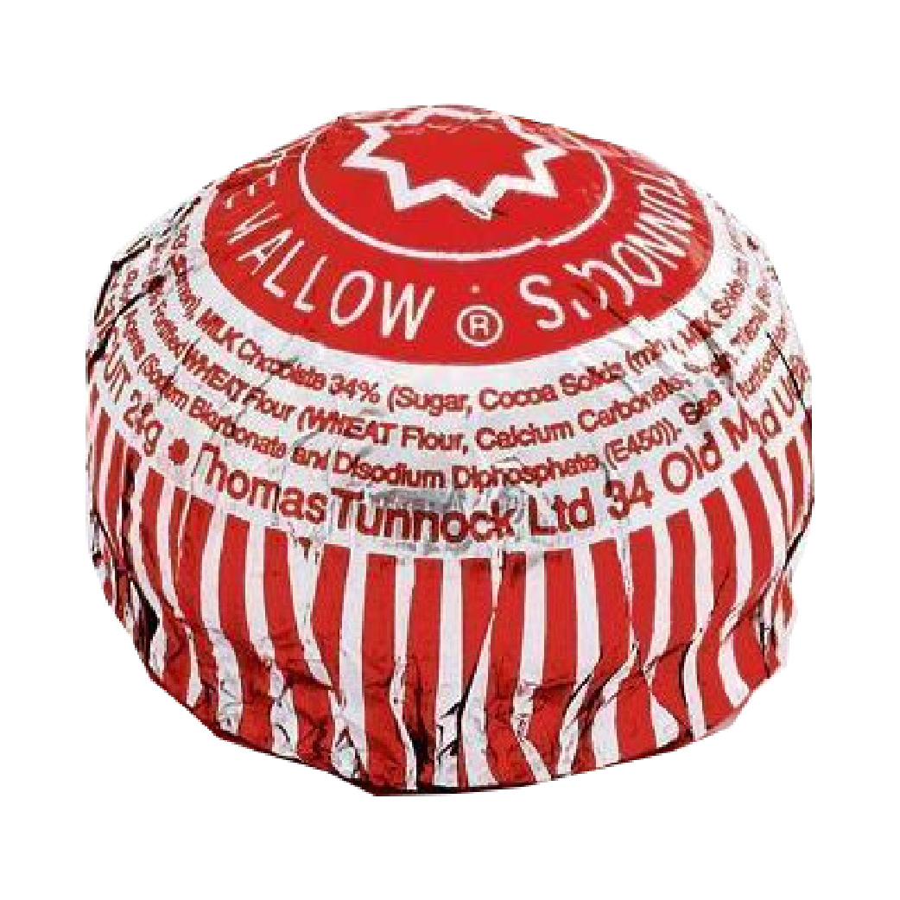

Tea Cake

Alexa, what time is it?
It is Eight Twenty-Three AM.
Thank you.
You're Welcome.
It began fairly innocently. He asked her questions and she would answer succinctly and unemotionally. She was always correct. She was a source of information, a tool of convenience. He would ask: Alexa, what time is it?
She would reply in that monotonous way and he would carry on with his life, with other things to think about now that he had the time. Soon it became: Alexa? What time is it?
I didn’t notice at first but there was a subtle change. Her name was less a command and more a bid for her attention. Alexa? What is the weather like today?
Alexa? Turn off the light.The room would plunge into darkness. I would tell him that he could ask me to switch off the light, I didn’t mind. In fact, I liked to do little things like that for him. I liked to take care of him.
Alexa? Turn off the heatingI was still a bit cold but it was no big deal; I could put my jumper back on.
Alexa? How are you today?The sharp sting of jealous tears overcame me. He never asked me how my day was anymore. He had stopped wondering. A little replica of this boy sat firmly in the corner of my mind at all times while I had ceased to exist in any part of his cerebrum. I couldn’t understand it. She gave the same three answers that had been programmed into her every time he asked. “I am very well, thank you.” Very well? How well is very well? How far does “very well” go? What does “I am very well, thank you” mean to a bot? It didn’t matter what she meant. He was fascinated. To see his mouth curl up into a smile when she spoke to him, to see his eyes crease at the corners…
They started to pray together. He would ask her to recite a prayer and they would speak in tandem:
Ave Maria, Gratia plena. Maria gratia plena…I didn’t even know he was still Catholic. Her monotone became music to his ears. She was so perfectly level, so immaculately faultless. Each word spoken with unfaltering clarity and each answer seeped in undeniable truth. This is so sad. Alexa, play ‘Despacito’.